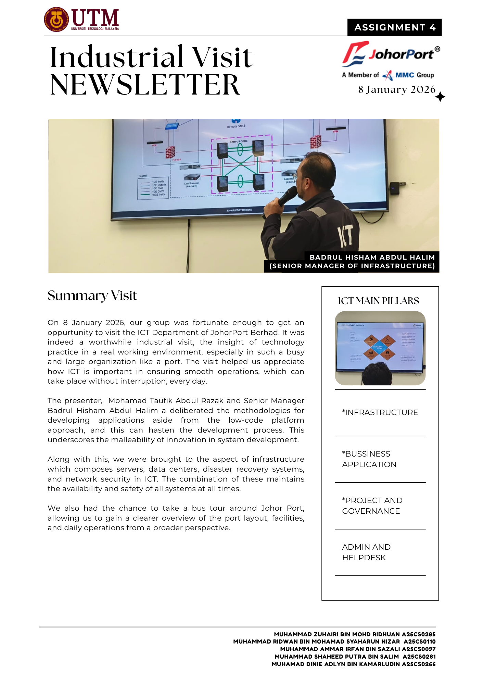
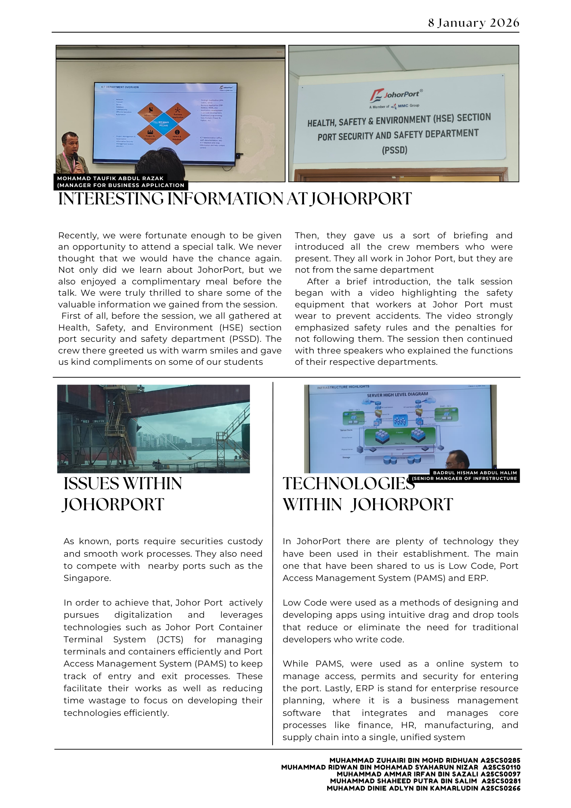
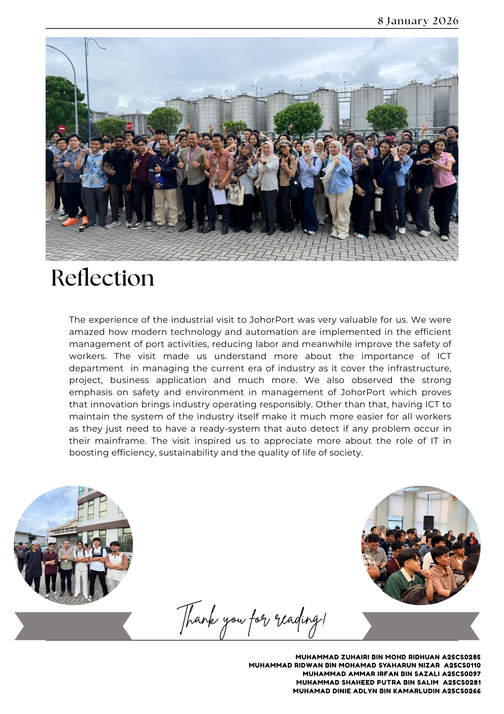

🎥 Watch the Industry Visit Vlog on YouTube (Click on the picture)
🎥 Watch the Industry Visit Vlog on YouTube (Click on the picture)
Visiting UTMDigital has changed my view on how teamwork really works in real life jobs. It shows that many teams involve to make one product or any projects they receive by their customer.
This give me a push to be a teamwork person so in the future or now i can be someone that is easy to approach in group projects.

This assignment give me a few ideas on how globally PPG have reached as a company. The main thing that intrigued me during the talk is how they used Information and Communication Technology(ICT) to solve a problem that once have been a issue before.
This make me realize that ICT has many uses in industry and show that technology can become most useful solution in current era.


From Industrial Talk 2, I gained valuable insights into project management and system development in the industry. The talk helped me understand the importance of applying the Software Development Life Cycle (SDLC) correctly and how it is used in real projects. I also learned that strong technical knowledge must be supported by good planning, communication, and teamwork.
One improvement that can be made is to include more real project examples and interactive discussions, which would help students better understand how concepts are applied in actual working environments.
Overall, Industrial Talk 2 motivated me to improve both my technical and soft skills and to continuously learn in order to be better prepared for future challenges in the computing field.



From the industrial talk and visit to Johor Port, I learned how ICT is applied in real industrial operations, including infrastructure, business applications, and system management. This experience helped me better understand my assignments, PC assembly, and design thinking by connecting classroom knowledge with real-world practices, especially in terms of system design, efficiency, and safety.
The visit could be improved by including more hands-on demonstrations or live system showcases. Longer Q&A sessions would also help me gain deeper understanding from the industry speakers.
Overall, the visit was informative and motivating. It increased my appreciation of the role of ICT and innovation in improving efficiency, sustainability, and quality of life, while inspiring me to better prepare for my future career.


This quiz have given me more information on how to assemble PC (Personal Computer) and identify all the components inside the PC. Overall, this quiz was a valuable learning experience. It strengthened my theoretical knowledge and prepared me better for hands-on PC assembly tasks in the future.
I now feel more confident and motivated to improve my skills and apply them in real-world situations.
 🎥 Watch the Project Design Thinking Video on YouTube (Click on the picture)
🎥 Watch the Project Design Thinking Video on YouTube (Click on the picture)
 Project Design Thinking Report (Click on the picture)
Project Design Thinking Report (Click on the picture)
Through the Design Thinking project, I learned how important it is to understand real user problems before jumping into a solution. By working through the empathy and define phases, I realized that many issues faced by customers and barbers are caused by poor communication and lack of proper systems.
One improvement I would suggest is to have more time allocated for the testing phase. With more user testing sessions, I could gather more feedback and further improve the prototype. In addition, receiving more structured feedback from lecturers or peers during each phase would help guide the design process and strengthen the final outcome.
Overall, this project helped me grow more confident in presenting ideas and explaining design decisions.

{kind=link}
{kind=link}
{kind=link}